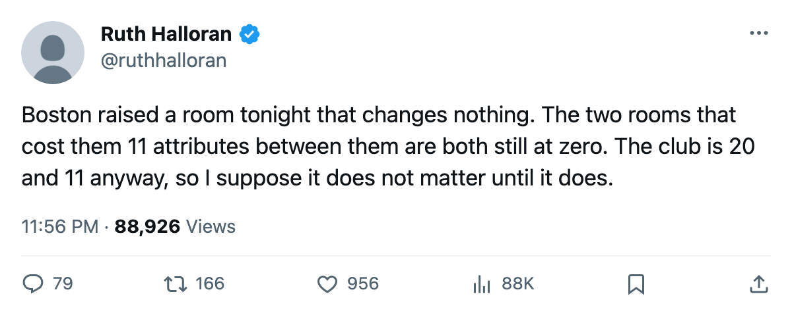

Four of Six Upgrades Since November Bought a Room the Model Cannot Read
Boston just raised its locker room from 0 to 1. The rating model reads nothing from that room at any level.
 Ruth HalloranBusiness of hockey · The Building
Ruth HalloranBusiness of hockey · The Building Boston Bruins raised its locker room from level 0 to level 1 between the last two saves, the 6th upgrade the league's facility ledger has filed since 2005-11-30. Four of those six went to tracks that carry a number in the tuning file and change no player rating: scouting room, twice. Locker room, twice. The 2 that moved something measurable were
Boston Bruins raised its locker room from level 0 to level 1 between the last two saves, the 6th upgrade the league's facility ledger has filed since 2005-11-30. Four of those six went to tracks that carry a number in the tuning file and change no player rating: scouting room, twice. Locker room, twice. The 2 that moved something measurable were  Montreal Canadiens equipment and
Montreal Canadiens equipment and  Columbus Blue Jackets practice rink.
Columbus Blue Jackets practice rink.
The locker room sits at level 0 for Boston, carrying a -10 modifier in the file. It went to level 1, which the file calls -8. None of that reaches a man's game. The tuning table gives the locker room a morale curve, and the shipped data reads nothing from it. A club can raise that room nine more times and watch the same zero sit in its "on the ice" column.
The rooms that actually cost Boston
Boston's on-the-ice facilities penalty is -3.56, second-worst in the league behind  Mighty Ducks of Anaheim at -3.77. That number is the average of what the 4 live tracks cost the club's own players, weighted by position. Three of those tracks sit at or near level zero for Boston:
Mighty Ducks of Anaheim at -3.77. That number is the average of what the 4 live tracks cost the club's own players, weighted by position. Three of those tracks sit at or near level zero for Boston:
| track | level | modifier | what it moves |
|---|---|---|---|
| equipment | 0 | -6 | agility, acceleration, balance, shot accuracy |
| workout | 0 | -5 | strength, checking, endurance |
| practice | 1 | -4 | all attributes at home |
| travel | 5 | +1 | all attributes on the road |
Equipment and workout both sit at zero. Equipment at 0 costs the average skater 6 points across agility, acceleration, balance and shot accuracy. Workout at 0 costs 5 across strength, checking and endurance. The practice rink at 1 adds a further -4 at home. Travel at 5 is par and reads +1, which is the one room Jimmy Benton has taken care of.
Boston is winning with 50 points from 38 games, second in the Northeast, 20-11-4. Jimmy Benton's prestige went up 14 points this edition, tied with  Phoenix Coyotes for the largest single jump among the 30 clubs. The payroll is $51.90M against $1.04M per point, 5th-best in the league. The building costs the men 3.56 attributes and the club wins anyway.
Phoenix Coyotes for the largest single jump among the 30 clubs. The payroll is $51.90M against $1.04M per point, 5th-best in the league. The building costs the men 3.56 attributes and the club wins anyway.
The wave, counted
Here is every facility upgrade filed since 2005-11-30, with what it does to a rating:
| club | track | between | rating effect |
|---|---|---|---|
| Montreal Canadiens | equipment +1 | Nov 30 to Dec 1 | moves agility, acceleration, balance, shot accuracy |
 Colorado Avalanche Colorado Avalanche | scouting +1 | Dec 1 to Dec 4 | read by nothing |
 Nashville Predators Nashville Predators | scouting +1 | Dec 11 to Dec 15 | read by nothing |
| Columbus Blue Jackets | practice +1 | Dec 24 to Dec 29 | moves all attributes at home |
 Dallas Stars Dallas Stars | locker_room +1 | Dec 29 to Jan 4 | read by nothing |
| Boston Bruins | locker_room +1 | Jan 5 to Jan 8 | read by nothing |
The clubs doing this are spread across divisions, and none of them appear to be making the same choice twice. Colorado Avalanche bought scouting, then Nashville Predators bought scouting, then both locker rooms came in. The pattern reads like a general manager buying the room the file tells him to buy, without checking what the file's number actually touches.
What Boston could have bought instead
Equipment at 0 costs 6 attribute points a night. Moving it to 1 costs 4. That is a 2-point swing across every forward's agility, every defenceman's acceleration, every shot attempt in the building. Workout at 0 costs 5. Moving it to 1 costs 3. Those 2 moves would cut Boston's on-the-ice penalty from -3.56 to roughly -2.6, a gap the model puts between them and the 8th-worst club in the league.
Instead Boston raised a room from -10 to -8 and the file calls that morale. The club morale average is 94.4, 9th of 30. The room the file says controls morale does nothing to it here, and the club wins anyway on a payroll that buys a point for $1.04M. The building is still costing them 3.56 attributes on the ice. They just bought the wrong room again.
